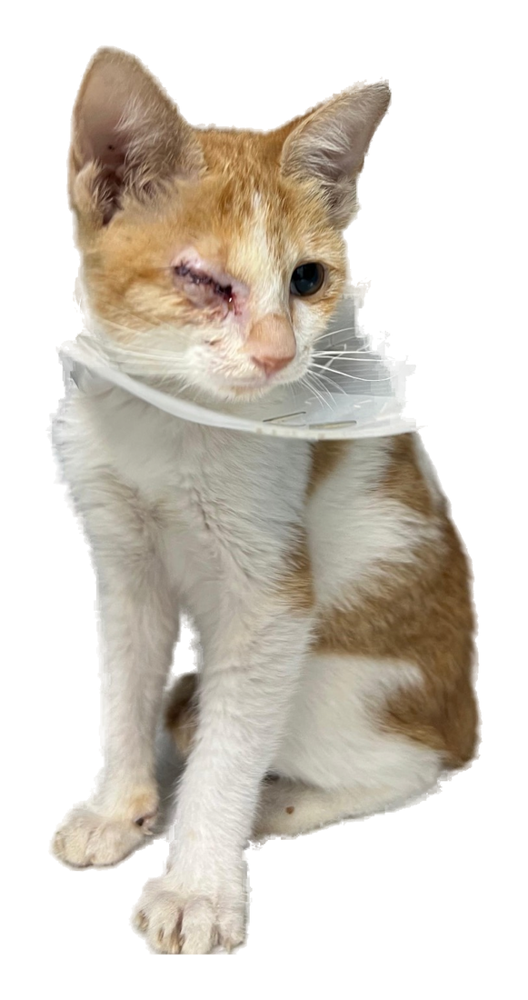

Up for
One wink and you'll fall in love!

Psst... this wink is
just for YOU!
just for YOU!
Hi, I'm
I was the runt of my litter, found all alone on the street. My eye was badly infected, so I needed urgent surgery. I'm healing at the vet now, but when I leave I have nowhere to go...
Will you be my person?
Will you be my person?
Playful
Cuddly
Healthy
Call to adopt me
050 602 6622
Find me at
Arabian Paw Vet